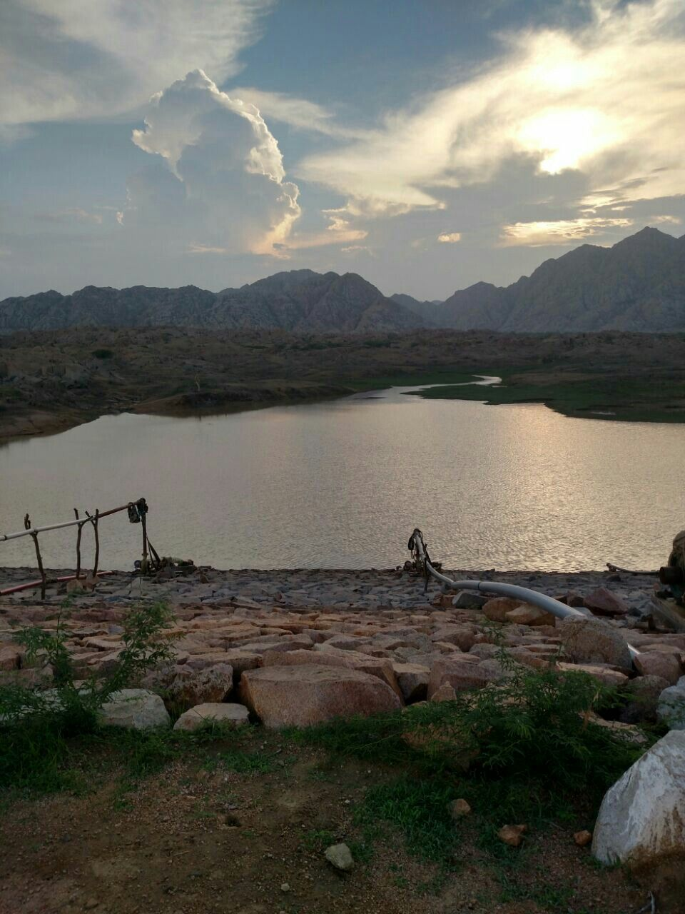

Featured Attractions

Jain Temples of Nagarparkar
Ancient temples showcasing remarkable architecture and spiritual heritage
Explore Temples
Karoonjhar Mountains
Majestic mountains offering breathtaking views and hiking trails
Discover Mountains
